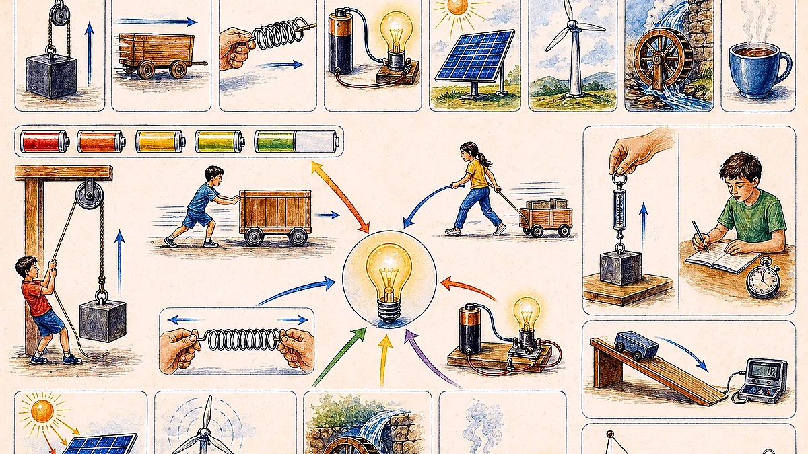
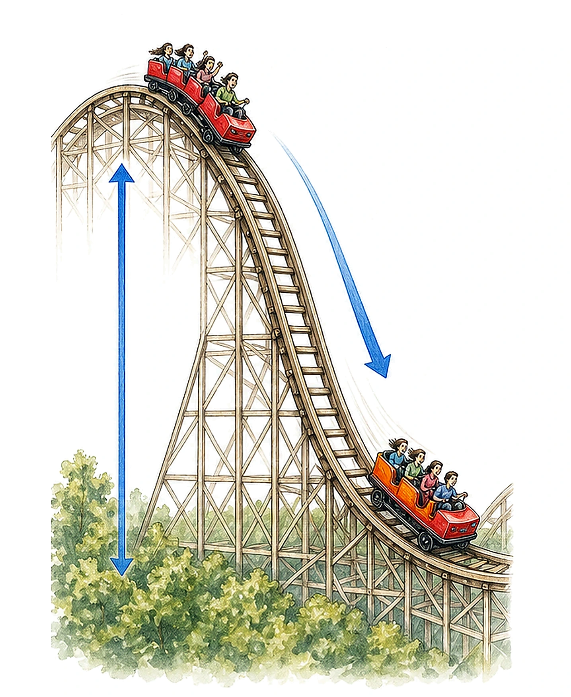
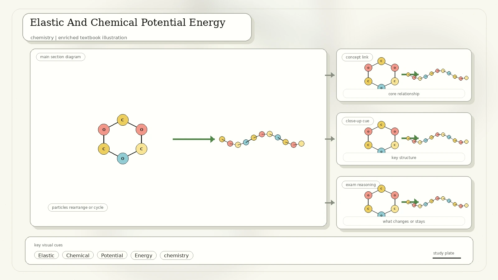
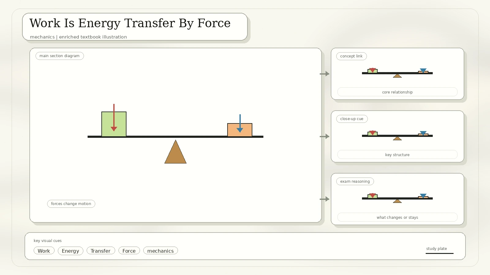
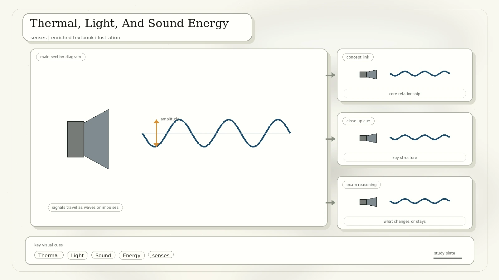
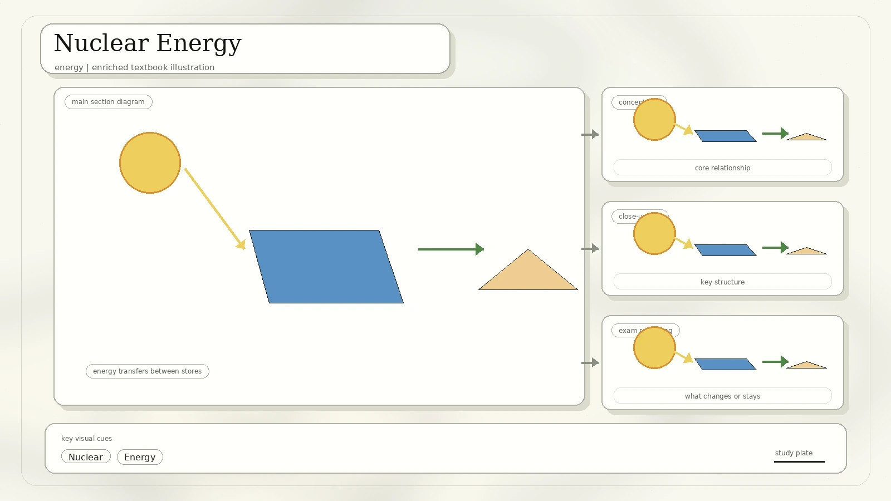
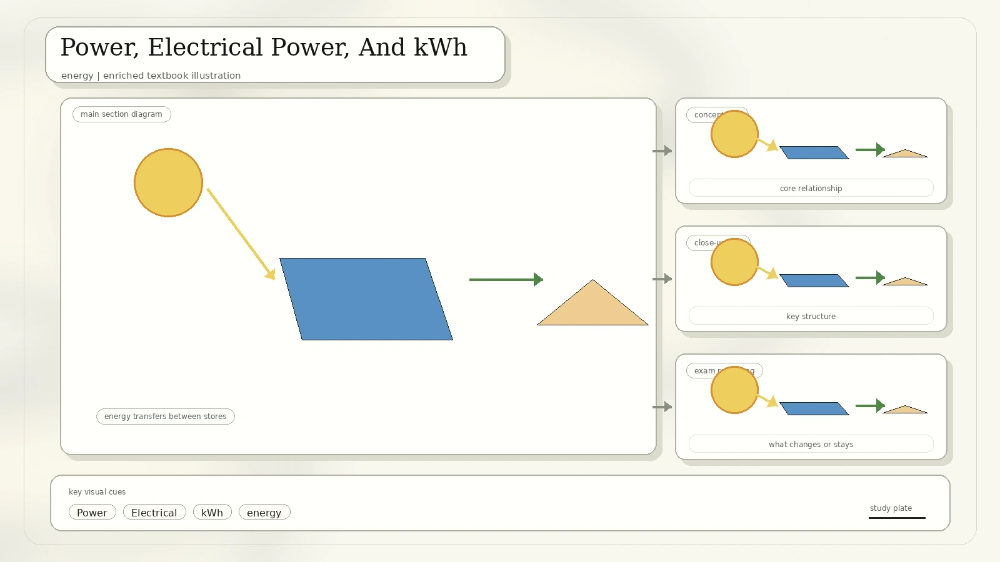
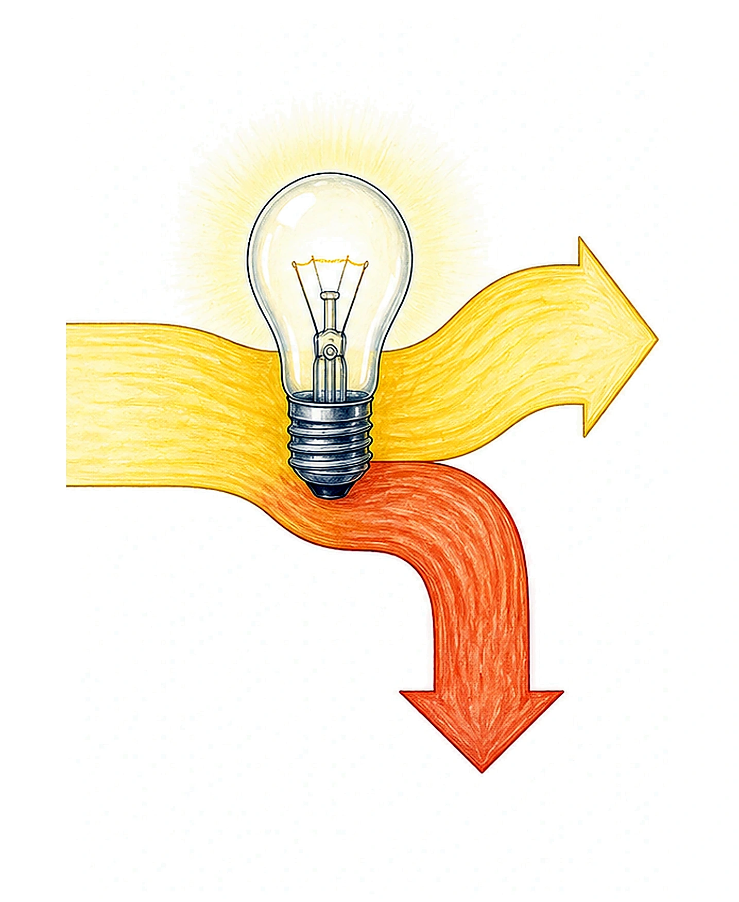
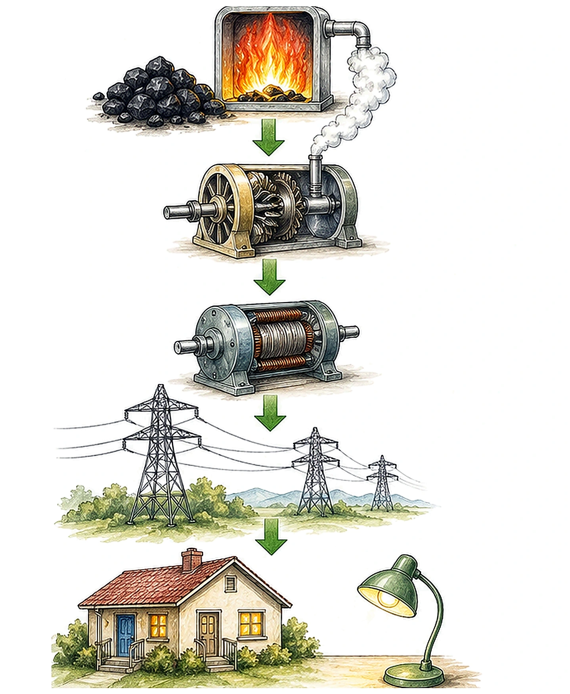

What Is Energy?
Energy is the measure of the ability of an object or a system to perform work. The scan first lists the main forms used in this course, then later expands the list with thermal, light, sound, and nuclear energy.

Energy of an object due to motion or speed.
Energy due to position in a gravitational field.
Energy stored when an object is stretched or compressed.
Energy stored in chemical bonds, such as food, fossil fuels, and batteries.
Energy stored in atomic nuclei.
Energy carried by particle motion, photons, and vibrations.
Renewable And Non-Renewable Sources
The source diagram separates renewable energy from non-renewable energy. Renewable sources are replenished naturally on human time scales, while non-renewable fuels are depleted when used.

Sun, wind, running water, biomass from plants and animals, tidal energy from rising and falling tides, and geothermal energy from underground steam within Earth.
Coal, natural gas, fossil fuel oil, and nuclear fuel. The fossil fuels store chemical energy from ancient biological material.
Careful comparison: renewable does not automatically mean impact-free, and non-renewable does not automatically mean high carbon. Nuclear is non-renewable because fuel is mined, but it produces electricity without combustion during operation.
Conservation Of Energy
The law of conservation of energy states that energy cannot be created or destroyed. It can only be changed into another form. In other words, the total energy of a closed system is constant.

Kinetic Energy And Gravitational Potential Energy
Mechanical energy is the sum of kinetic energy and gravitational potential energy. A roller coaster, falling ball, or pendulum trades energy between these two forms.
K = 1/2 mv^2
K is kinetic energy in joules, m is mass in kilograms, and v is velocity in metres per second. Velocity is a vector, but kinetic energy is a scalar.
Ep = mgh
m is mass, g is gravitational field strength in N/kg, h is height, and Ep is gravitational potential energy in joules.

Elastic And Chemical Potential Energy
Elastic energy is stored when materials deform and can return to their original shape. Chemical potential energy is stored in bonds between atoms and released during reactions.

Ee = 1/2 k(Delta x)^2
k is the spring constant in N/m. Delta x is the change in length of the spring in metres.
Stored in rubber bands, bungee cords, drawn bows, trampolines, and springs.
Stored in food, fossil fuels, batteries, petroleum, natural gas, wood, biomass, and molecules made during photosynthesis.
Respiration converts chemical energy in food into kinetic energy and energy for life processes.
Archery conversion: chemical potential energy in arm muscles becomes elastic potential energy in the bowstring. When released, the elastic energy becomes kinetic energy of the arrow.
Work Is Energy Transfer By Force
Work is the energy transfer that takes place when a force causes an object to move. Work done equals force applied multiplied by the distance moved in the direction of the force.

W = Fs
W is work in joules, F is force in newtons, and s is distance in metres.
W = Fd cos theta
Only the component of force in the direction of motion does work.
A 100 N force moves a box 5 m, so W = 100 N x 5 m = 500 J.
| Situation | Is Work Done? | Reason |
|---|---|---|
| Holding a briefcase still | No work on the briefcase | Force is applied, but the displacement is zero. |
| Carrying a briefcase horizontally at constant height | No work on the briefcase by the upward holding force | The force is vertical while the displacement is horizontal. |
| Carrying a briefcase upstairs | Yes | There is an upward displacement component in the force direction. |
| Lowering a briefcase with a generator | Work can be negative on the briefcase | Force and displacement point in opposite directions; energy leaves the briefcase. |
Thermal, Light, And Sound Energy
The scan adds three everyday energy forms. Thermal energy is linked to matter's particles, light energy is carried by photons, and sound energy is carried by vibrations through a medium.

Q = mcDeltaT
Q is thermal energy, m is mass, c is specific heat capacity, and DeltaT is the change in temperature. Heat transfer can occur by conduction, convection, and radiation.
The Sun is the most important light source for Earth. Plants use light energy for photosynthesis. Other sources include burning objects, lamps, and bioluminescence.
The higher the frequency of photons, the higher their energy.
Sound is caused by vibrations. A vibrating object has kinetic energy, and some of that kinetic energy is transferred as sound energy.
Nuclear Energy
Nuclear energy is described using E = mc^2. The scan asks for the two fundamental nuclear processes used to explain energy production: fission and fusion.

Splitting large atoms such as uranium or plutonium into smaller fission products. A neutron can start the split, releasing more neutrons and causing a chain reaction.
Commercial nuclear plants use fission heat to generate electricity.
Joining small atoms, commonly hydrogen nuclei, to form heavier atoms such as helium. Fusion powers the Sun and can release very large amounts of energy with fewer radioactive by-products.
Commercial fusion power remains a research challenge.
Scale note from the scan: fission of one uranium atom releases far more energy than combustion of one carbon atom. The historical Hiroshima example is included to show the extreme energy density of nuclear reactions.
Power, Electrical Power, And kWh
Power is the amount of energy transferred or converted per unit time. The SI unit is the watt, equal to one joule per second. Power is a scalar quantity and is the rate at which work is done.

P = W / t
Since W = Fs, power can also be P = Fs/t = Fv when motion is in the force direction.
P = IV
Using V = IR gives P = V^2/R or P = I^2R.
A kilowatt-hour is a unit of energy consumption: work = power x time. 1 kWh is the energy used by a 1 kW device running for 1 hour.
Efficiency And Sankey Diagrams
Energy can be transformed from one form to another, and all input energy must come out. However, not all of it may come out in the desired form. Efficiency measures the useful output compared with the input.

Filament lamp example: a 100 W lamp that is 5% efficient gives 5 W as light and 95 W as heat.
Electrical Power Generation
The scan closes with electricity generation. It includes a world electricity mix chart for 2024 and diagrams of hydroelectric and coal power stations.
| 2024 Source In The Scan | Generation | Share |
|---|---|---|
| Coal | 10,587 TWh | 34.4% |
| Natural gas | 6,796 TWh | 22.1% |
| Hydro | 4,417 TWh | 14.4% |
| Nuclear | 2,765 TWh | 8.99% |
| Wind | 2,497 TWh | 8.12% |
| Solar | 2,130 TWh | 6.92% |
| Other | 1,569 TWh | 5.10% |

What To Remember
Energy cannot be created or destroyed; it only changes form.
KE = 1/2 mv^2, GPE = mgh, elastic energy = 1/2 k(Delta x)^2, work = Fs, power = W/t.
Only the force component in the direction of displacement does work.
Most generators use moving fluids or steam to spin turbines, then convert kinetic energy to electrical energy.